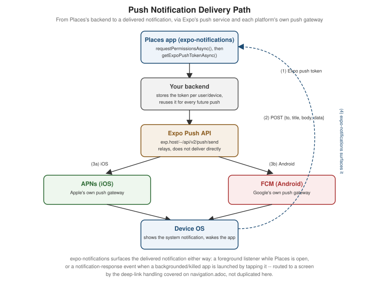

Device Capabilities
|
This content was generated with the assistance of AI and should be verified against the official documentation before being relied on in production. |
Images and Icons deferred any device capability that goes beyond
drawing pixels on screen to this page. Places touches the device itself in several ways — reading the user’s
current location for a new place, showing saved places on a map, attaching a photo, and notifying the user when
a friend shares a place — and every one of them starts with the same question a general
community component does not have to answer:
does the platform require permission first, and if so, how does Places ask for it correctly on both iOS and
Android? This page covers that permission model once, then the sensor, location, map, camera, and notification
APIs that build on it, ending with how to vet a candidate community module before adding it to Places at all.
Platform-Specific Code and Device APIs covers
PermissionsAndroid’s full method surface, `Platform.select, and other device-facing native modules
(BackHandler, Linking, Share) in depth; this page only introduces PermissionsAndroid far enough to place
it correctly against the alternatives below.
The Permission Model: iOS, Android, and Two Ways to Ask
Both platforms gate the same category of access — location, camera, microphone, contacts, notifications — behind an explicit user grant, but they arrive there from opposite directions: iOS asks for a declared reason string approved at review time, while Android asks for a declared permission whose actual grant happens live, at request time, in front of the user.
iOS: Info.plist Usage-Description Strings
Every sensitive API on iOS requires a plain-language usage-description string in Info.plist, shown verbatim
in the system permission dialog; omitting the key for an API Places actually calls crashes the app immediately
when that API is first touched, and App Store review rejects a submission whose declared strings don’t match its
actual behavior. In an Expo-managed project these keys are never hand-edited into a generated Info.plist — app.config.ts’s `ios.infoPlist is the source of truth, and expo prebuild (or an EAS Build) regenerates the
native file from it every time:
// app.config.ts (excerpt)
export default {
expo: {
name: 'Places',
ios: {
bundleIdentifier: 'com.irurueta.places',
infoPlist: {
NSLocationWhenInUseUsageDescription:
'Places uses your location to tag a new place with where you visited it.',
NSCameraUsageDescription:
'Places uses your camera to attach a photo to a place.',
NSPhotoLibraryUsageDescription:
'Places lets you pick an existing photo to attach to a place.',
},
},
},
};Android: Declared Permissions and the Runtime Model
Android’s AndroidManifest.xml must declare every permission the app might request, but for the "dangerous"
permission groups (location, camera, microphone, contacts, and more) declaring one only makes it requestable — the user still grants or denies it live, the first time the app asks, exactly like iOS’s dialog. This is the
runtime permission model introduced in Android 6.0: unlike an install-time permission (accepted as a whole list
before the app is even installed, the pre-6.0 behavior still used today for a small set of "normal" permissions
such as internet access), a dangerous permission can be granted, later revoked from Settings, and re-requested,
all while the app keeps running. In an Expo-managed project the manifest entries themselves come from
app.config.ts’s `android.permissions (Expo unions in whatever a config plugin such as expo-location already
requires, so most of the list below is implicit rather than hand-written):
// app.config.ts (excerpt)
export default {
expo: {
android: {
package: 'com.irurueta.places',
permissions: ['ACCESS_FINE_LOCATION', 'ACCESS_COARSE_LOCATION', 'CAMERA'],
},
},
};PermissionsAndroid: the Direct React Native API
For an Android permission not already covered by a higher-level Expo module, PermissionsAndroid is React
Native’s own bridge to the runtime dialog above — request for one permission, requestMultiple for several at
once, and check to read the current grant state without prompting. It has no iOS equivalent (there is nothing to
call: the Info.plist string alone drives iOS’s dialog) and no effect at all on a "normal" Android permission,
which is granted automatically at install time. platform-specific-code-and-device-apis.adoc covers its full
method signatures and rationale-dialog handling; the calls below are only enough to place it against the
higher-level alternative that follows:
import { PermissionsAndroid, Platform } from 'react-native';
async function requestFineLocation(): Promise<boolean> {
if (Platform.OS !== 'android') {
return true; // iOS asks via its own Info.plist-driven dialog instead
}
const granted = await PermissionsAndroid.request(PermissionsAndroid.PERMISSIONS.ACCESS_FINE_LOCATION);
return granted === PermissionsAndroid.RESULTS.GRANTED;
}The Higher-Level Alternative: Expo’s Declarative Config
Every Expo SDK module that touches a sensitive capability (expo-location, expo-camera, expo-notifications,
and the rest of this page) ships its own config plugin, referenced in app.config.ts’s `plugins array, that
generates the correct Info.plist string and the correct AndroidManifest.xml permission from one shared
place — the two sections above stop being two things to keep in sync by hand and become one plugin invocation:
// app.config.ts (excerpt)
export default {
expo: {
plugins: [
[
'expo-location',
{
locationWhenInUsePermission: 'Places uses your location to tag a new place with where you visited it.',
},
],
],
},
};Places uses this plugin-driven form throughout the rest of this page precisely because it removes the chance of
an iOS string and an Android permission drifting apart; reaching for PermissionsAndroid directly remains correct
only for an Android-specific permission with no Expo module wrapping it at all.
Sensors, Haptics, and Biometrics
A handful of Expo SDK modules cover the smaller device capabilities Places or a similar app reaches for outside location, maps, camera, and notifications — each a thin, promise-based wrapper over a native sensor or system prompt:
| Package | What it does | Note |
|---|---|---|
|
Reads the accelerometer, gyroscope, magnetometer, and barometer as subscribable event streams
( |
No permission dialog on either platform — motion sensors are not part of either OS’s dangerous-permission list. |
|
Triggers a short haptic pulse — |
A community/Expo-maintained wrapper over the platform’s haptic engine, distinct from Places's own |
|
Prompts Face ID/Touch ID on iOS or the fingerprint/face-unlock prompt on Android
( |
Biometrics gate a local action (unlocking the app, confirming a delete) — they are never a substitute for the OAuth sign-in Security covers, which authenticates against the backend. |
|
Reads battery level/charging state ( |
Useful for throttling a background sync worker rather than for anything Places's UI shows directly. |
|
Reads and sets screen brightness ( |
On Android, changing system (as opposed to just the current app’s) brightness needs the |
Geolocation with expo-location
Places needs the user’s current coordinates exactly once per new place — a foreground read, requested and completed while Places is open and visible — which is the common case and the only one this page’s own example uses. Background location (tracked while the app is backgrounded or killed) needs a second, separately requested permission and a background task registration, and is a materially heavier commitment on both platforms — both app stores review background-location apps more strictly, and iOS surfaces an extra "Always" upgrade prompt after the foreground grant is already in place — so it is called out here only for completeness, not used by Places:
import * as Location from 'expo-location';
async function requestForegroundLocation(): Promise<boolean> {
const { status } = await Location.requestForegroundPermissionsAsync();
return status === 'granted';
}
async function requestBackgroundLocation(): Promise<boolean> {
// Only meaningful after the foreground permission above is already granted.
const { status } = await Location.requestBackgroundPermissionsAsync();
return status === 'granted';
}A one-shot read is getCurrentPositionAsync, with an accuracy option trading battery and latency for
precision (Location.Accuracy.Balanced is enough for tagging a place; Location.Accuracy.Highest costs more
battery for marginal gain here):
async function getCurrentCoordinates(): Promise<{ latitude: number; longitude: number } | null> {
const granted = await requestForegroundLocation();
if (!granted) {
return null;
}
const position = await Location.getCurrentPositionAsync({ accuracy: Location.Accuracy.Balanced });
return { latitude: position.coords.latitude, longitude: position.coords.longitude };
}A continuous subscription is watchPositionAsync, useful for a live-tracking screen (not one Places has)
rather than a one-off tag:
const subscription = await Location.watchPositionAsync(
{ accuracy: Location.Accuracy.Balanced, timeInterval: 5000, distanceInterval: 10 },
(position) => {
console.log(position.coords.latitude, position.coords.longitude);
},
);
// later, when the screen unmounts:
subscription.remove();Maps with react-native-maps
react-native-maps renders a native map view — MKMapView on iOS, the Google Maps SDK (or, unconfigured, the
platform default) on Android — as an ordinary React Native component, not a WebView embedding a web map. Its
provider prop chooses which underlying map renders: PROVIDER_GOOGLE for Google Maps on both platforms (the
common choice, since it looks identical everywhere and needs a Google Maps API key configured for each platform),
or the default, which uses Apple Maps on iOS and the Google Maps SDK on Android with no extra configuration
needed for either. region/initialRegion describe the visible area as a center coordinate plus zoom-equivalent
deltas; Marker places a pin at a coordinate, and a Callout nested inside a Marker is the small info bubble
that appears when it’s tapped. Polygon, Polyline, and Circle overlay shapes on top of the same map — not
used by Places itself, but the natural next step for, say, drawing a visited-region outline.
Camera and Media with expo-camera and expo-image-picker
Attaching a photo to a place has two distinct sources, each its own Expo module: expo-camera takes a new
photo through the device’s own camera UI, and expo-image-picker picks an existing one from the photo library
(or, via the same API, still lets the user launch the camera from inside the picker’s own UI on some platforms).
Both resolve to the same shape Places actually needs: a local file uri string, assigned straight into
NewPlaceInput.photoUri.
import { launchCameraAsync, launchImageLibraryAsync, requestCameraPermissionsAsync } from 'expo-image-picker';
async function takePhoto(): Promise<string | null> {
const { status } = await requestCameraPermissionsAsync();
if (status !== 'granted') {
return null;
}
const result = await launchCameraAsync({ quality: 0.8 });
return result.canceled ? null : result.assets[0].uri;
}
async function pickPhotoFromLibrary(): Promise<string | null> {
const result = await launchImageLibraryAsync({ mediaTypes: ['images'], quality: 0.8 });
return result.canceled ? null : result.assets[0].uri;
}expo-image-picker’s `launchCameraAsync/launchImageLibraryAsync are shown here because they cover both camera
capture and library selection from one package with one result shape; expo-camera’s own `<CameraView>
component is the lower-level alternative when Places needs a fully custom, always-visible camera screen (a
live preview with app-drawn overlays) rather than the platform’s own modal camera UI.
Push Notifications with expo-notifications
expo-notifications wraps APNs on iOS and FCM on Android behind one cross-platform API, plus Expo’s
own push service as the relay in between — Places's backend never talks to APNs or FCM credentials directly,
it sends a message to Expo’s push API addressed by an Expo push token, and Expo forwards it to whichever
platform gateway that token belongs to.
import * as Notifications from 'expo-notifications';
async function registerForPushNotifications(): Promise<string | null> {
const { status } = await Notifications.requestPermissionsAsync();
if (status !== 'granted') {
return null;
}
const { data: expoPushToken } = await Notifications.getExpoPushTokenAsync();
return expoPushToken; // sent to Places's backend and stored per user/device
}Handling a notification while the app is in the foreground needs a handler registered once, near app startup, that decides whether the OS should still show a banner/sound over the running app (by default it would not, since the app is already visible):
Notifications.setNotificationHandler({
handleNotification: async () => ({
shouldShowAlert: true,
shouldPlaySound: false,
shouldSetBadge: false,
}),
});Tapping a notification — whether Places was backgrounded or freshly launched by the tap — fires a
'notificationResponse' event carrying whatever data payload the backend attached, most usefully a place id to
navigate straight to:
const subscription = Notifications.addNotificationResponseReceivedListener((response) => {
const placeId = response.notification.request.content.data.placeId as string | undefined;
if (placeId !== undefined) {
// hand off to the navigator -- see navigation.adoc for the actual deep-link routing
}
});Navigation covers turning that placeId into an actual screen transition
via deep linking; this page stops at receiving the event and extracting its payload.

Choosing a Community Module: the React Native Directory and New Architecture Support
Every capability above beyond React Native’s own built-ins came from a community module — a third-party package, most of them thin wrappers over a native SDK, exactly the category Core Components and React Fundamentals already introduced. Before adding one to Places, React Native Directory (reactnative.directory) is the fastest way to check whether it is actually a safe bet: it aggregates each package’s GitHub activity, open-issue count, and last-publish date into one maintenance signal, and — the check that matters most for Places specifically — flags whether it supports the New Architecture (Fabric and Turbo Native Modules). Because Places targets the New Architecture exclusively (established on Architecture Under the Hood as the only architecture React Native ships since 0.87), a module the Directory marks as New-Architecture-incompatible, or with no maintainer response to the New Architecture migration issue that most popular packages have long since closed, is not a candidate for Places regardless of how well it otherwise fits — it would either crash at runtime under Fabric or force the whole app back onto the legacy interop layer just to keep one dependency working.
Places: "Use My Location" and a Map of Saved Places
(a) The "Use My Location" Button
Added to AddPlaceScreen (Text Input and Forms's canonical
form), a useCurrentLocation Hook requests foreground permission, reads the current position, and hands the
result to the form via React Hook Form’s setValue — filling exactly the latitude/longitude fields
NewPlaceInput already declares, rather than the hardcoded null values that page’s original submission used:
// src/features/places/hooks/useCurrentLocation.ts
import { useCallback, useState } from 'react';
import * as Location from 'expo-location';
export function useCurrentLocation() {
const [isLocating, setIsLocating] = useState(false);
const getCurrentCoordinates = useCallback(async (): Promise<{ latitude: number; longitude: number } | null> => {
setIsLocating(true);
try {
const { status } = await Location.requestForegroundPermissionsAsync();
if (status !== 'granted') {
return null;
}
const position = await Location.getCurrentPositionAsync({ accuracy: Location.Accuracy.Balanced });
return { latitude: position.coords.latitude, longitude: position.coords.longitude };
} finally {
setIsLocating(false);
}
}, []);
return { getCurrentCoordinates, isLocating };
}// src/features/places/screens/AddPlaceScreen.tsx (excerpt -- "use my location" wired into the existing form)
import { Button } from 'react-native';
import { useCurrentLocation } from '../hooks/useCurrentLocation';
export function AddPlaceScreen({ onSubmitted }: { onSubmitted: () => void }) {
// ...control, handleSubmit, formState from useForm<AddPlaceFormValues>() as before...
const { getCurrentCoordinates, isLocating } = useCurrentLocation();
const onUseMyLocation = async () => {
const coordinates = await getCurrentCoordinates();
if (coordinates !== null) {
setValue('latitude', coordinates.latitude);
setValue('longitude', coordinates.longitude);
}
};
return (
// ...existing form fields...
<Button
title={isLocating ? 'Locating…' : 'Use my location'}
onPress={onUseMyLocation}
disabled={isLocating}
/>
);
}(b) Rendering Saved Places on a Map
A PlacesMapScreen renders every saved Place with non-null coordinates as a Marker, skipping any place the
user never tagged with a location, with a Callout showing the place’s name:
// src/features/places/screens/PlacesMapScreen.tsx
import MapView, { Callout, Marker, PROVIDER_GOOGLE } from 'react-native-maps';
import { Text } from 'react-native';
import { usePlaces } from '../hooks/usePlaces';
import type { Place } from '../types';
function hasCoordinates(place: Place): place is Place & { latitude: number; longitude: number } {
return place.latitude !== null && place.longitude !== null;
}
export function PlacesMapScreen() {
const { data } = usePlaces();
const places = data?.pages.flatMap((page) => page.items) ?? [];
const locatedPlaces = places.filter(hasCoordinates);
return (
<MapView
provider={PROVIDER_GOOGLE}
style={{ flex: 1 }}
initialRegion={{
latitude: locatedPlaces[0]?.latitude ?? 0,
longitude: locatedPlaces[0]?.longitude ?? 0,
latitudeDelta: 0.1,
longitudeDelta: 0.1,
}}
>
{locatedPlaces.map((place) => (
<Marker key={place.id} coordinate={{ latitude: place.latitude, longitude: place.longitude }}>
<Callout>
<Text>{place.name}</Text>
</Callout>
</Marker>
))}
</MapView>
);
}(c) Requesting Push Notification Permission at Sign-In
Places asks for notification permission once, right after sign-in, and stores the resulting Expo push token alongside the signed-in user rather than re-asking on every launch:
// src/features/settings/registerPushToken.ts
import * as Notifications from 'expo-notifications';
import { authFetch } from '../../lib/apiClient';
export async function registerPushToken(): Promise<void> {
const { status } = await Notifications.requestPermissionsAsync();
if (status !== 'granted') {
return;
}
const { data: expoPushToken } = await Notifications.getExpoPushTokenAsync();
await authFetch('/me/push-token', { method: 'POST', body: JSON.stringify({ expoPushToken }) });
}